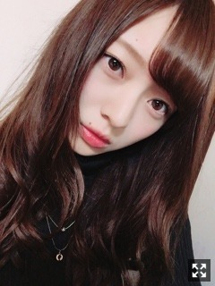
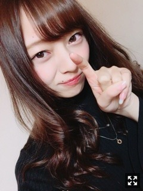
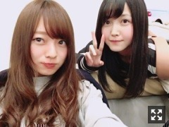
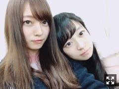
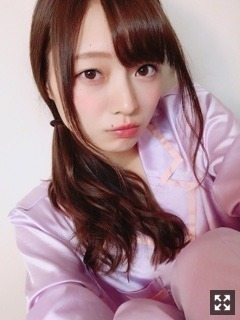

新年。 梅澤美波
みなさまこんにちは！！
乃木坂46 3期生の
梅澤美波です。

今回も質問返しもしてるので長くなります
お付き合い下さい（ ｉ _ ｉ ）
あけましておめでとうございます！！
いかがお過ごしですか？？
もう2017年！！
酉年！！
紅白歌合戦！先輩方が
本当に素敵で綺麗でした。
偉大な先輩方だなって改めて。
このグループにいさせていただけること、
本当に光栄です。
私も貢献できるよう頑張ろうと思いました！！
そして
昨年はありがとうございました。
と言ってもお会い出来た機会は１回しかまだなくて、
１度も会えてない方もいるのですが、
この世界に入って
皆様に出会えることが出来て幸せな限りです（ ｉ _ ｉ ）
迷って迷って、本当に迷って
踏み出したこのオーディション。
この選択に間違いはありませんでした( ¨̮ )
毎日、目まぐるしく過ぎる日々
色々なことを経験させていただけて
本当にありがたい限りです。
加入してからの４ヶ月は
今まで生きてきた中で
１番濃い時間だったんじゃないかな〜
たくさんの経験をさせていただけて
辛いこと悔しいこと、あったけど
何より素敵で尊敬する大好きな先輩方、
大好きでお世話になっているスタッフさんや関係者の方々と
一緒にお仕事ができて本当に幸せです。
新年と、新しい歳で
何か達成できたらなって思います。
17歳は、自分の中でまだ子供だったけど
18歳ではもう終わり。
誕生日がお正月に近いと
心が新年共に入れ替わりやすいです◎
お見立て会で宣言した目標を
少しでも早く叶えられるよう
私、これからも精一杯頑張ります！
スタート地点はみんな同じだから
そこからどう輝くかだなって
少しずつ、自分のペースで
上を目指していけるように。
こんな私ですが、
応援よろしくお願いします！！
前置きが長くなりましたが自己紹介！
梅澤美波
17歳 高校３年生
1999年 1月 6日 生
A型
好きな食べ物 いちご じゃがいも 牛タン
年齢は必ずと言っていいほど上に見られがちです。
20歳以上に見られる( ¨̮ )
好きなことはファッション誌を読むことです
お洋服が好きです
モデルさんが好きです
雑誌は毎月気になったものを読みます
あとはメイク動画を見るのは日課です
私は口元にほくろがあります
昔はコンプレックスでしたが
今ではちょっとすきになりました◎
眉毛の上にもホクロがあります
左目の下にも２つほくろがあります。
（笑）（笑）
前髪の分け目から見える眉上のホクロと
目の下のふたつのホクロと
口元のホクロがくの字に並びます
面白いです（笑）
第一印象が怖いとか、話しかけずらい
って言われることが多いのですが
実は全然そんなことありません！！
面白いことが好きです☺︎
最近の悩みは
髪の色がすぐ色落ちすることと
どんな服を買っても大体袖が短いことです
腕がかなり長いです
あとは
空が好きです
パワーをもらえます
夜空が好きすぎてずっと見ていられます☺︎
カメラのフォルダに空フォルダがあります〜
初めましての方
showroomさんの頃に応援してくださっていた方の名前
握手会に来てくださった方の名前
エピソード
あ！この方だ〜
って思いながら読ませていただきました☺︎
記憶力は良いほうかと☺︎
本当に全部読んでます！！
メモ帳とにらめっこしながら
メモをとりながら幸せな時間を過ごしました
ニックネーム考えてくださったり
励みになる言葉を書いてくださったり
すごく文章を考えてコメントしてくれたんだろうな〜って
幸せでした。
ありがとうございます。
あだ名の集計しました！！
ダントツ多かったのが
梅ちゃんでした！！
予想通り！！（笑）
他に多かったのが、
みーちゃん、みなみん、うめみな、うめみん、みーな
でした！！
この5つの中からもうちょっと考えて決めます
もう少々お待ちを( .. )
質問をくださった方の中から
少し答えます！！
質問が重なっている方もいらっしゃるので
名前は今回は伏せさせていただきます（ ｉ _ ｉ ）
question〜
Q.showroomの推薦コメントのスクショまだとってある？
A.もちろん、消すわけありません！
本当に皆さまが思ってる以上に元気や勇気を頂いていたので、今でも見返したりします☺︎元気が出ます。ありがとう。
Q.サイリウムカラー決まった？
A.サイリウムなんてまだ決めていい立場ではないと思うんですけど、海が好きなのと名前に"波"が入っているので、青×水色にしたいな〜って、ぼんやりと思っています☺︎
Q.乃木坂46の中で好きな曲は？
A.立ち直り中です！隙間もだいすき！
おっとりした曲だったり、かっこいい曲が好きだったりします☺︎
Q.スカート派？パンツ派？
A.どちらも結構好きで、履きます！
お見立て会のときに着てたフェザーのショートパンツが最近お気に入りです☺︎
Q.バレーボールはどのポジションだった？
A.初めはセッターをやっていましたが、背が伸び始めてアタッカーに変わりました！☺︎（笑）
少ないですが今回はここまで！
少しずつやっていきますね、なにか聞きたいことがあればぜひ( ¨̮ )
先日、初めてのファンレターをいただきました。
こんな私にも、
応援してくださる方がいるんだなって
本当に嬉しかったです。
この時期のこうゆうの、
本当に元気出るんですよ
不安で怖くて右も左も分からないからこそ
皆様の存在ってものすごく大きいんです
今に限るわけじゃないけど
今だからこそ、響くものがあります
ここにいる意味が一つできた気がします
この人達を裏切ってはいけないなと、
微力ながらも幸せにしたいと
強く思いました
どんな形でもいいから
自分なりに感謝を届けていきたい
何も分からない私を
育ててください。
言葉の力って偉大だな〜って改めて。
宝物が増えたよ( ¨̮ )
私の支えです
本当にありがとう
嬉しいよ〜〜（ ｉ _ ｉ ）！！！！
みんな大好き

そこのあなた〜（笑）（笑）
ありがとう
手紙って、素敵ですね☺︎

光加減で髪まっちゃっちゃ
しお〜〜
本当に純粋で可愛いです。
かわいい妹です( ¨̮ )
しっかりしてるとこもあるし
変なとこもあるし泣き虫なとこもあります
放っておけない存在
趣味がとにかく合ってお揃いたくさんあるし、好きなものも似すぎててびっくりします☺︎
すき

たまみ〜〜
見た目はクールなんだけど
たまにテンションがおかしくなります( ¨̮ )
笑顔がすんごくかわいいの
意識高いな〜って、見習わなきゃなって
目がおっきくて本当に美人なんです〜
すき
この間、
しお(久保史織里)、たまみ(阪口珠美)、あや(吉田綾乃クリスティー)、みなみ(私)
４人で鍋パーティーとお泊まりしました☺︎
めっちゃくちゃ楽しかった〜
実はめちゃくちゃはしゃぎます( ¨̮ )
なんでも話せます( ¨̮ )
あやは私よりも年下みたいです
いつも赤ちゃんみたいにくっついてきます
でも頼れます
よく一緒にいます( ¨̮ )
年明けに第2弾するよ〜
何鍋にしようかな〜
二回目なのにまた長文、、
ごめんなさい（ ｉ _ ｉ ）
毎日かきたい、、
次回は13日です☺︎

お気に入りのぱじゃま
冷え性だからあったかくして寝ます
寒いから皆さんもあったかくしてね
風邪引かないようにね
2017年、突っ走っていくぞー！！！
またねん
明日はももっぴ
Original：https://www.nogizaka46.com/s/n46/diary/detail/36271?ima=0535&cd=MEMBER